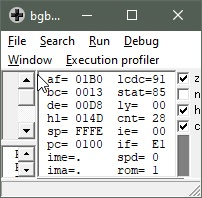

3 minutes
Easily Test Your Game Boy Emulator Implementation
TL;DR I have compiled a file of expected values for every register at each CPU cycle for the first 12,000 or so CPU cycles in JSON format. You can download it here and use it to easily test your Game Boy emulator for correctness.
[
{
"a": 0, "b": 0, "c": 0, "d": 0,
"e": 0, "f": 160, "h": 127, "l": 255,
"pc": 12, "sp": 65534
},
{
"a": 0, "b": 0, "c": 0, "d": 0,
"e": 0, "f": 160, "h": 255, "l": 38,
"pc": 15, "sp": 65534
},
// and so on... roughly 12,000 times.
]
What is this?
This is the output of a program that took a screenshot of the debug window of BGB showing the CPU register values at each CPU cycle throughout the bootrom (scrolling Nintendo logo) sequence like this:
Each screenshot was ran through an optical character recognition (OCR) library called Tesseract in order to extract the register values as strings. The resulting values were then dumped to JSON like in the example above.
A developer working on a Game Boy emulator could then easily write a test program that keeps a counter to keep track of elapsed cpu cycles and use that counter as an index to pull the expected values of each CPU register from the JSON file and see if the values match. It could be used initially to increase the correctness of an emulator, and then as a regression test to ensure previously-working CPU instructions aren’t broken.
How do I use it?
- Download the JSON file from here
- Unmarshal it into an array in-memory (it’s just a 500KB file, any modern PC should be able to hold it in-memory with no problem.)
- Start your emulator, pause it after the very first cycle.
- Grab your CPU register values (pseudocode):
int actualRegA = cpu.RegisterA - Grab your expected register values (pseudocode):
int expectedRegA = ExpValues[elapsedCycles].a - If they match, whatever instruction was just executed by your CPU was implemented correctly (woohoo!) or you got astronomically lucky (awww!)
- Step your emulator CPU, pause it again, go to step 4.
Bonus points if you do this in a continuous integration system which runs against each source code change.
Caveats
It’s just the first 12,000 or so instructions. The Nintendo logo isn’t even visible by the time the CPU has executed 12,000 cycles. However, it’s a decent smoke test, and better than doing it manually 🙂
Why?
Game Boy emulator development is difficult. Throughout the development of java-gb I was constantly struggling with figuring out how to test for correctness. I had resorted to using BGB‘s debugger, manually stepping the CPU and seeing if the register values matched those of my implementation. It was a painful and manual process.
It turns out that BGB has a -headless command-line argument that it claims runs with no window or I/O of any kind. I thought this would be useful for automated testing, but I wasn’t able to work.
I really wanted a simple, easy, and repeatable way to smoke/regression test my Game Boy emulator, so here we are.
Did you find this useful? Are there any errata that should be fixed? Let me know! My contact information is on the homepage.